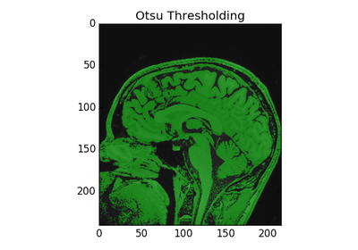

User Guide¶
Here is a guide on SimpleITK.


Segmentation¶
Image segmentation filters process an image to partition it into (hopefully) meaningful regions. The output is commonly an image of integers where each integer can represent an object. The value 0 is commonly used for the background, and 1 ( sometimes 255) for a foreground object.
